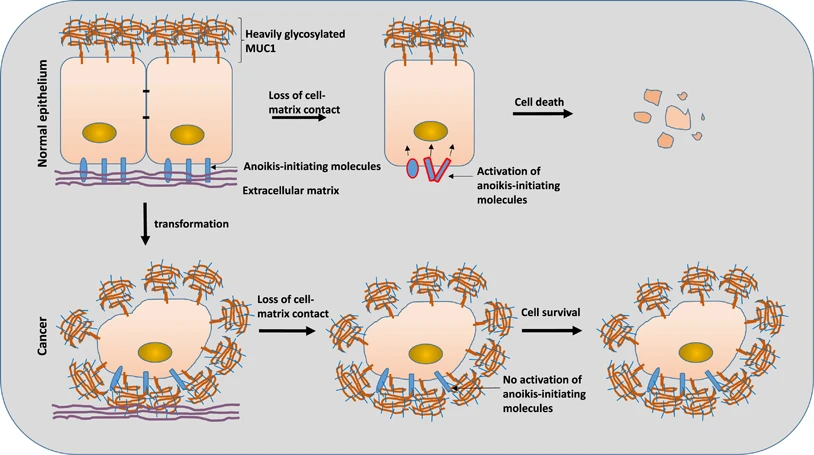

Editor note: this page intentionally uses explicit math delimiters here because the site parser disables single-dollar inline math on purpose, so ordinary prose like currency does not break when content is published from Obsidian.
Editor note: do not “clean up” the indentation in this section unless you re-check the built HTML. These examples are intentionally spaced to match strict CommonMark list nesting in Quartz, because smaller indents can look acceptable in Obsidian while silently breaking on the published site.
Top-level item with multiple paragraphs
This paragraph should stay attached to the list item and align under the item text, not break out into the main article flow.
This is a second paragraph in the same item. It is intentionally separated by a blank line so we can test loose-list rendering.
Top-level item with nested bullets and extra paragraphs
Intro paragraph for the second item.
First nested bullet
Second nested bullet with its own continuation paragraph.
This paragraph should remain attached to the nested bullet rather than snapping back to the outer list.
Back on the parent item again. This paragraph should still belong to the same numbered item.
Top-level item with deeper nesting
Nested ordered item
This paragraph belongs to the nested ordered item.
Another nested ordered item
Deep nested bullet
Another deep nested bullet
Continuation paragraph for the deep nested bullet.
Final paragraph for the outer numbered item after the nested ordered list ends.
Top-level item with a blockquote
This blockquote should stay inside the list item.
So should this second quoted paragraph.
Final paragraph after the blockquote.
Unordered Lists
First bullet
Test
Second bullet
Nested bullet
Another nested bullet
Third bullet
Images and Transclusions

Anoikis illustration
Transclusion Test
Irreversible cell cycle arrest accompanied by altered cellular metabolism and secretory activity. This is one of the ways multicellular organisms prevent damaged cells from becoming cancerous.